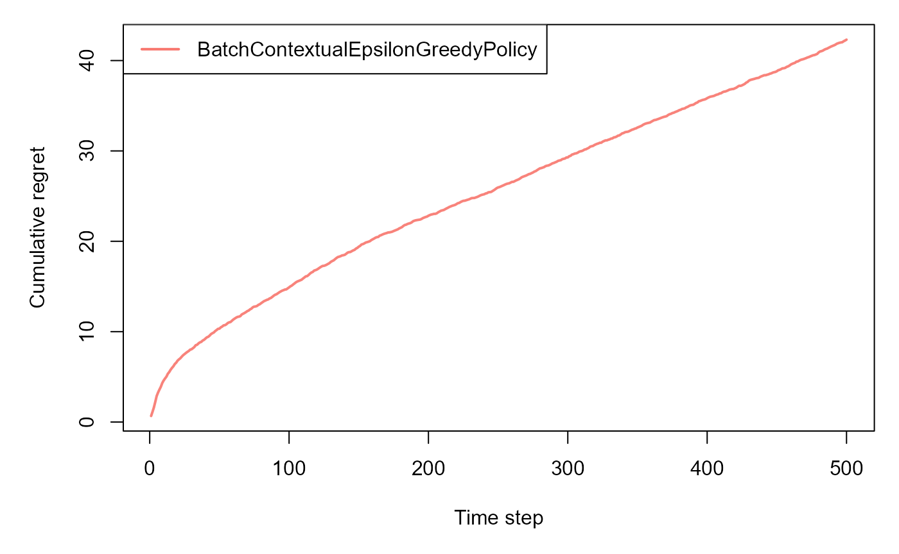

This vignette demonstrates the simulation capabilities included in the cramR package. The simulation code is primarily intended for reproducing experimental results from the associated theoretical papers and for validating the performance of the Cram method under controlled data-generating processes. While not intended for direct use in practical applications, these simulations allow users to benchmark and understand the empirical behavior of the method in synthetic environments.
What is cram_bandit_sim()?
The cram_bandit_sim() function runs on-policy
simulation for contextual bandit algorithms using the Cram
method. It evaluates the statistical properties of policy value
estimates such as:
- Empirical Bias on Policy Value
- Average relative error on Policy Value
- RMSE using relative errors on Policy Value
- Empirical Coverage of Confidence Intervals
This is useful for benchmarking bandit policies under controlled, simulated environments.
📋 Inputs
You need to provide:
bandit:
A contextual bandit environment object that generates contexts (feature vectors) and rewards for each arm.
Example:ContextualLinearBandit, or any object following the contextual package interface.policy:
A policy object that takes in a context and selects an arm (action) at each timestep.
Example:BatchContextualLinTSPolicy, or any compatible contextual package policy.horizon:
An integer specifying the number of timesteps (rounds) per simulation.
Each simulation will run for exactlyhorizonsteps.simulations:
An integer specifying the number of independent Monte Carlo simulations to perform.
Each simulation will independently reset the environment and policy.-
Optional Parameters:
alpha:
A numeric value between 0 and 1 specifying the significance level for confidence intervals when calculating empirical coverage.
Default:0.05(for 95% confidence intervals).seed:
An optional integer to set the random seed for reproducibility.
IfNULL, no seed is set.do_parallel:
A logical value indicating whether to parallelize the simulations across available CPU cores.
Default:FALSE(parallelization disabled).
We recommend keepingdo_parallel = FALSEunless necessary, as parallel execution can make it harder for the underlyingcontextualpackage to reliably track simulation history.
In particular, parallel runs may cause missing or incomplete entries in the recorded history, which are then discarded during analysis.
Example: Cram Bandit Simulation
# Number of time steps
horizon <- 500L
# Number of simulations
simulations <- 100L
# Number of arms
k = 4
# Number of context features
d= 3
# Reward beta parameters of linear model (the outcome generation models, one for each arm, are linear with arm-specific parameters betas)
list_betas <- cramR:::get_betas(simulations, d, k)
# Define the contextual linear bandit, where sigma is the scale of the noise in the outcome linear model
bandit <- cramR:::ContextualLinearBandit$new(k = k, d = d, list_betas = list_betas, sigma = 0.3)
# Define the policy object (choose between Contextual Epsilon Greedy, UCB Disjoint and Thompson Sampling)
policy <- cramR:::BatchContextualEpsilonGreedyPolicy$new(epsilon=0.1, batch_size=5)
# policy <- cramR:::BatchLinUCBDisjointPolicyEpsilon$new(alpha=1.0, epsilon=0.1, batch_size=1)
# policy <- cramR:::BatchContextualLinTSPolicy$new(v = 0.1, batch_size=1)
sim <- cram_bandit_sim(horizon, simulations,
bandit, policy,
alpha=0.05, do_parallel = FALSE)
#> Simulation horizon: 500
#> Number of simulations: 101
#> Number of batches: 1
#> Starting main loop.
#> Finished main loop.
#> Completed simulation in 0:00:04.769
#> Computing statistics.
What Does It Return?
The output contains:
A data.table with one row per simulation, including:
-
estimate: estimated policy value
-
variance_est: estimated variance
-
estimand: true policy value (computed from held-out context data)
-
prediction_error:estimate - estimand
-
est_rel_error: relative error on estimate
-
variance_prediction_error: relative error on variance
-
ci_lower,ci_upper: bounds of the confidence interval
-
std_error: standard error
Result tables (raw and interactive), reporting:
- Empirical Bias on Policy Value
- Average relative error on Policy Value
- RMSE using relative errors on Policy Value
- Empirical Coverage of Confidence Intervals
Example Output Preview
head(sim$estimates)
#> sim estimate variance_est estimand prediction_error est_rel_error
#> <int> <num> <num> <num> <num> <num>
#> 1: 1 0.5017577 0.008990666 0.5445425 -0.04278478 -0.07857014
#> 2: 2 0.6189290 0.000770998 0.5981170 0.02081205 0.03479596
#> 3: 3 0.3455183 0.057464183 0.5528602 -0.20734195 -0.37503504
#> 4: 4 0.5837325 0.001025324 0.5998785 -0.01614596 -0.02691539
#> 5: 5 0.3333935 0.018343895 0.5228533 -0.18945980 -0.36235750
#> 6: 6 0.5137367 0.001389443 0.4651693 0.04856737 0.10440794
#> variance_prediction_error std_error ci_lower ci_upper
#> <num> <num> <num> <num>
#> 1: -0.8807182 0.09481912 0.31591566 0.6875998
#> 2: -0.9897709 0.02776685 0.56450699 0.6733510
#> 3: -0.2376059 0.23971688 -0.12431818 0.8153547
#> 4: -0.9863967 0.03202069 0.52097315 0.6464919
#> 5: -0.7566262 0.13543963 0.06793667 0.5988503
#> 6: -0.9815659 0.03727523 0.44067855 0.5867948
sim$interactive_tableNotes
-
list_betasis updated internally to track the true parameters per simulation
- The first simulation is discarded by design (due to writing issues
in
contextual) even whendo_parallel = FALSE.